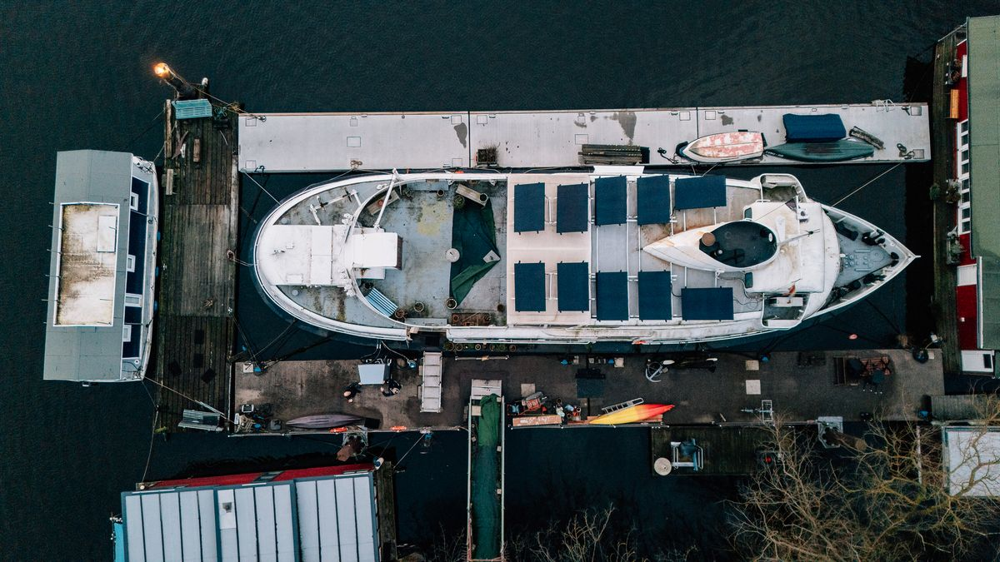

Studio
Elbe
Unternehmerfrühstück Stade · 20.11.2026
Die meisten Mittelständler haben kein Strategieproblem. Sie haben
zu viele
Prioritäten.
Johanna Albers
Was wir in 40 Klausuren gelernt haben
1 / 18

Foto: Till Heidrich